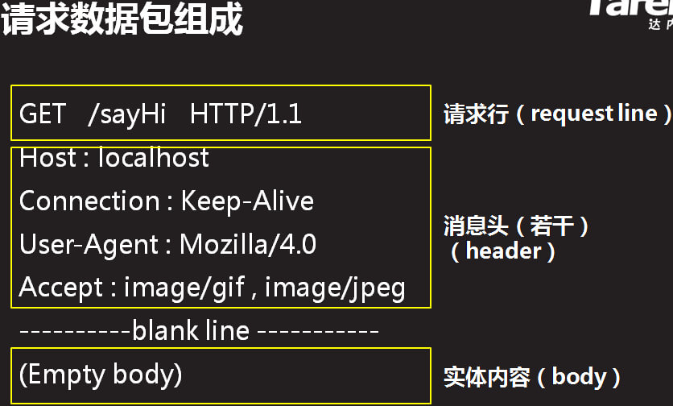

Servlet & JSP
Servlet
- web应用演变
- 单机程序
- 主机终端
- 两层CS架构：客户端(VB,VC,Delphi)+DB
三层CS架构：客户端+应用服务器(任何支持TCP编程的语言)+DB
BS架构：Browser+Web Server+DB
- Servlet运行步骤
- 浏览器依据ip,port建立与web服务器（Servlet容器）之间的连接
- 浏览器将相关数据打包（按http协议创建一个请求数据报），发送给web服务器
- web服务器拆包（按http协议将请求数据报中的相关数据解析出来），将解析到的数据添加到request对象里，同时，创建一个response对象。
- web服务器依据路径找到Servlet创建对象，调用service处理请求，处理结果写到response对象里
- web服务器将response对象中的数据取出来，打包（按http协议创建数据包），发送给浏览器
- 浏览器拆包（按http协议将数据包中的数据解析出来），生成相应的页面
- 开发Servlet步骤
- 编写一个实现Servlet借口或继承HttpServlet的Java类
- 使用javac命令编译源文件为字节码文件
将编译完的组件打包
- 部署：将appName整个文件夹拷贝到Tomcat的webapps文件下 ???
- 启动Tomcat并访问Servlet：在地址栏输入符合一定规范的地址
http://ip:port/appName/servlet的URL(URL在web.xml描述文件中可以找到)
- 状态码
- 服务器执行完客户端的请求后，返回给客户端的一个执行结果的状态编码
- 302： 重定向
- 404错误： Web服务器（容器）根据请求地址找不到对应资源
- 地址错误（拼写错误，字母大小写错误）
- web.xml文件中的两个<servlet-name>不一致
- 工程没有部署
- Web应用程序部署结构没有遵守Servlet规范
- 405错误： Web服务器（容器）找不到service()处理请求
- service方法名称写错,参数类型、方法异常、返回值类型与标准不一致
- 500错误： 程序在运行过程中出错
- Servlet类没有继承HttpServlet或实现Servlet接口
- web.xml文件中的<servlet-class>写错
- service方法中的代码运行时抛出异常
- Http协议
如何通信： '无状态'协议，即响应完客户的请求之后，就断开连接
数据格式
请求数据包

- 请求行： 请求方式+请求路径+协议类型+版本
- 消息头： 是一些键值对，一般由w3c定义，大部分自动生成
- 实体内容： 只有当请求方式为post时，才有数据
响应数据包
- 状态行： 协议类型+版本+状态码+状态描述
- 消息头： Web服务器返回消息
- 实体内容： 程序处理的结果
- Servlet如何处理Http协议
- Web容器收到一个Http请求时，通信数据由Web容器负责封装和提供，这些信息被解析成以下两个对象
- HttpServletRequest
- 读取和写入HTTP请求数据（请求行，消息头）
- 取得和设置Cookies
- 取得路径信息
- 标识HTTP会话
- 实现请求转发
方法： ???
- Enumeration<String> (HttpServletRequest).getHeaderNames()
- String (HttpServletRequest).getHeader(String name)
- String (HttpServletRequest).getMethod() // get,post,put...
- String (HttpServletRequest).getRequestURI() // 获取请求资源路径
- HttpServletResponse
- 设置对客户端的输出内容
- 设置响应的状态码
- 设置浏览器的解码方式
- 设置Cookies
- 实现重定向
- 处理中文
- (ServletRequest).setCharacterEncoding("utf-8");
- 设置发往服务器的参数以何种编码，设置从request取得的值或数据库中取出的值
- 如没设置，服务器默认使用"iso-8859-1"来编码
- get请求提交的参数在URI中，一开始就已按默认编码分析内容，
所以setCharacterEncoding无效；应该在server.xml中指定：URIEncoding=utf-8,
或：username = new String(username.getBytes("iso-8859-1"),"utf-8")
- (ServletResponse).setContentType(text/html; charset=utf-8");
- 设置HTTP响应的编码，同时指定了浏览器显示的编码（生成消息头中content-type的值）
- 通知服务器以何种编码后，自动调用setCharacterEncoding("utf-8")来通知浏览器解码
- 要在response.getWriter()执行之前或response提交之前使用
- 获取请求参数
- String (ServletRequest).getParameter(String name)
- 执行第一个时，Java将按编码分析所有的内容 ???
- 参数不存在，返回null
- 表单提交时，没有填写数据，返回""
- String[] (ServletRequest).getParameterValues(String name)
- 当有多个请求参数名相同时，使用该方法
- 参数不存在，返回null
- 对于多选框，如果一个都不选，则浏览器不会将多选框的值发送给服务器,返回null
请求方式
- get: 向服务器请求指定的资源时使用
- 什么情况下使用：
- 在地址栏输入一个地址
- 点击链接
- 表单默认提交
- 特点：
- 将请求数据添加到请求资源路径的后面，所以只能提交少量数据
- 请求数据显示在浏览器地址栏上，不安全
- post: 向服务器提交需要处理的数据
- 特点：
- 请求数据添加到实体内容中???，可提交大量数据
- 相对安全
重定向
- void (HttpServletResponse).sendRedirect(String location)
重定向响应数据包
- 特点：
- 重定向地址可以是任何地址
- 重定向后，地址栏的地址发生改变
- 重定向过程中涉及到的Web组件并不会共享同一个request和response对象
- 重定向后，清空响应对象数据
- Servlet如何处理请求资源路径
对请求地址的处理过程
- 浏览器依据ip,port建立与Servlet容器之间的连接，
然后将请求资源路径appName/xx.html发送给容器
- 容器依据应用名"/appName"找到应用所在的文件夹，容器会默认请求的时一个Servlet，
查找web.xml文件中所有的Servlet配置"<url-pattern>",看是否有匹配的Servlet
- 匹配：
- 精确匹配： 尽管应用中有abc.html这个具体的页面，也会去执行该url-pattern对应的Servlet，而不是返回具体的abc.html页面???
- 通配符匹配： /*
- 后缀匹配： *.do
ps: 均没有匹配成功时，容器会查找相应的文件???，如找不到返回404
Servlet的生命周期
- 实例化： 容器调用Servlet的构造器，创建一个Servlet对象
- 默认：容器收到请求之后，开始创建
- 配置<load-on-start-up>： 容器启动之后立即创建
- 初始化： 容器在创建好Servlet之后，立即调用init方法，执行一次
- GenericServvet实现了init方法（将ServletConig保存下来，
并提供getServletConfig来获得ServletConfig对象）
<init-param>
<param-name>company</param-name>
<param-value>北京达内</param-value>
<init-param>- String getInitParameter(String name)
- 就绪： 容器收到请求之后调用Servlet对象的service()处理请求
- 销毁： 容器依据自身算法删除Servlet对象，删除前调用destroy()
Servlet核心接口与类
- ServletContent
- 容器启动后创建
- 特点：
- 唯一性： 一个Web应用对应一个servlet
- 一直存在： 容器不关闭，应用没有被写在删除，就一致存在???
- 绑定的数据可被整个应用上的所有组件共享
- 如何获得：通过GenericServlet、ServletConfig、HttpSession、FilterConfig提供的
... getServletContext()
- 常用方法：
- void (ServletContext).setAttribute(String name, java.lang.Object object)
转发
- 绑定数据到request对象
- void (ServletRequest).setAttribute(String name, Object obj)
- Object (ServletRequest).getAttribute(String name) // 没有值返回null
- 获得转发器:
RequestDispatcher (ServletRequest).getRequestDispatcher(String path)
- 转发： void (RequestDispatcher).forward(ServletRequest request, ServletResponse response)
特点：
- 转发目的地必须是同一个应用内部的某个地址
- 转发后，地址栏地址不变（发生自服务器内部，浏览器不知道）
- 转发所涉及到的Web组件并会共享同一个request和response对象
重定向和转发示意图
- 异常处理
- 编程式的异常处理： 使用转发进行跳转到指定页面进行提示说明 // error.jsp
（程序本身的异常使用）
- 容器中声明式处理：（系统级别的异常使用）
- 将异常抛给容器，但底层的错误提示不要返回用户；???
如：throw new ServletException(e);
<exception-type>
<exception-type>
javax.servlet.ServletException
</exception-type>
<location>/error.jsp</location>
</error-page>
- 路径处理技巧
- 链接地址、表单提交、重定向从应用名开始写
- 转发从应用名之后开始写???
- String (HttpServletRequest).getContextPath() // 获取应用的实际部署名称
- 状态管理
- 将客户端（浏览器）与服务器之间多次交互（一次请求，一次响应）当做一个整体来看待，
并将多次交互所涉及的数据即状态保存下来，管理指的是多次交互时对数据的修改
Cookie
- Cookie(String name, String value) // 创建Cookie
- void (HttpServletResponse).addCookie(Cookie cookie) // 添加/发送Cookie
- Cookie[] (HttpServletRequest).getCookies() // 获取客户端所有Cookie对象
- String (Cookie).getName() // 获取Cookie的名称
- String (Cookie).getValue() // 获取Cookie的值
- void (Cookie).setValue(String newValue) // 修改Cookie的值
- void (Cookie).setPath(String uri) // 设置Cookie路径
- void (Cookie).setMaxAge(int expiry) // 设置过期时间
- >0: 保存在硬盘上
- =0: 立即删除
- <0: 缺省值，保存在内存中，浏览器关闭清除
- 编码解码: Cookie只能保存合法的ASCII字符，保存中文需将中文转成ASCII字符
- static String (URLEncoder).encode(String s, String enc)
- static String (URLDecoder).decode(String s, String enc)
- Cookie的路径： 默认等于添加这个Cookie的Web组件的路径
- 发送Cookie的条件： 访问的地址是Cookie的路径或子路径，才会发送Cookie
- Cookie的限制：
- 可以被用户禁止
- 将状态保存在浏览器端，不安全。敏感的数据需加密后再使用Cookie保存
- 只能保存4kb左右的数据
- 个数有限???
- 只能保存字符串
Session（会话）
- HttpSession (HttpServletRequest).getSession() // 等价于参数为true
先查看请求中有没有SessionId，如果没有服务器则创建一个Session对象
- void (HttpSession).setAttribute(String name, Object value) // 绑定对象
- Object (HttpSession).getAttribute(String name) // 获取绑定对象
- void (HttpSession).removeAttribute(String name) // 移除绑定对象
- String (HttpSession).getId() // 获取sessionId
- void (HttpSession).invalidate() // 删除Session对象
- 修改Session的缺省时间限制:默认30分钟
- void setMaxInactiveInterval(int interval) // 修改Session超时时间
- 修改tomcat中conf/web.xml文件的设置：
<session-config>
<session-timout>30</session-timout>
</session-config>
- URL重写： 在原来的地址后面加上SessionId，这样即使禁用了Cookie，也能发送SessionId
- String encodeURL(String url) // 链接地址或表单提交时使用
- String encodeRedirectURL(String url) // 重定向时使用
- 优点：
- 安全： 将状态保存在服务器
- 能够保存更多的数据，Cookie大约保存4k
- 能够保存的数据类型更丰富，Cookie只能保存字符串
- ps: 占用服务器内存，如果用户量过大，会严重影响服务器的性能
过滤器
- 过滤API有3个常用接口：Filter, FilterChain, FilterConfig
- 如何编写过滤器
- 编写一个java类现实Filter接口
- Filter接口包含三个必须实现的方法：
- void init(FilterConfig filterConfig)
- void doFilter(ServletRequest request, ServletResponse response, FilterChain chain)
- void destroy()
- 实现拦截处理逻辑
- HttpServletRequest request = (HttpServletRequest)arg0;
- HttpServletResponse response = (HttpServletResponse)arg1;
- ......
- chain.doFilter(arg0, arg1); // 继续向后调用
- 将过滤器添加到Web应用中
<filter>
<filter-name>filter1</filter-name>
<filter-class>web.xxxServlet</Servlet-class>
<init-param> // 由FilterConfig读取: String getInitParameter(String name)
<param-name>illeaglStr</param-name>
<param-value>value<param-value>
<init-param>
<filter>
<filter-mapping>
<filter-name>filter1</filter-name>
<url-pattern>/xxx</url-pattern>
</filter-mapping>
- 过滤器和Web应用一起打包部署
- 过滤器的优先级： 依据<filter-mapping>的先后顺序来调用各个过滤器
- 过滤器的有点：
- 实现代码“可插拔性”： 即增加或减少某个功能模块，不会影响程序的正常执行
- 可将多个相同处理逻辑的模块集中写在过滤器里面，方便代码的维护???
- 监听器
- 容器产生的两大类事件
- 生命周期相关的事件
- ServletRequestListener
- void requestInitialized(ServletRequestEvent sre)
- void requestDestroyed(ServletRequestEvent sre)
- HttpSessionListener
- void sessionCreated(HttpSessionEvent se)
- void sessionDestroyed(HttpSessionEvent se)
- ServletContextListener
- void contextInitialized(ServletContextEvent sce)
- void contextDestroyed(ServletContextEvent sce)
- 绑定数据相关的事件
- ServletRequestAttributeListener
- void attributeAdded(ServletRequestAttributeEvent srae)
- void attributeRemoved(ServletRequestAttributeEvent srae)
- void attributeReplaced(ServletRequestAttributeEvent srae)
- HttpSessionAttributeListener: 方法同上
- ServletContextAttributeListener: 方法同上
- 如何编写监听器
- 编写Java类，依据监听的事件类型选择实现相应的监听器接口
- 在监听器接口方法中，实现相应的监听处理逻辑
- 在web.xml文件中注册该监听器
<listener>
<listener-class>web.CouListener</listener-class>
</listener>
-
-
-
JSP
- 编写规范
- HTML: --- service()中out.write()
- 注释：
- <!-- -->: 包含的Java代码会被执行
- <%-- --%>: 包含的Java代码不会被执行
- Java代码
- JSP表达式： <%= %> -- service()中out.print() -- ${}
- JSP小脚本： <% %> -- 原封不动到service() -- <c:xxx >...</c:xxx>
- JSP声明： <%! %> -- Servlet类中成员属性或成员方法
- 指令: <%@ 指令名 属性=值 %>
- page指令：导包、设置页面属性
- <%@ page import="java.util.*,java.sql.*" contentType="text/html;
charset=utf-8" pageEncoding="utf-8" errorPage="a4.jsp"
isErrorPage="true" session="false">
- include指令： <%@ include file="url" %>
- taglib指令：<%@ taglib uri="标签的命名空间" prefix="命名空间的前缀">
// 用于导入jsp标签
隐含对象
JSP运行原理
- EL表达式
- JavaBean: 一个公共的类，含有一个空参的构造方法一些属性和访问这些属性的get/set方法
- EL表达式的作用：
- 访问Bean的属性： 容器会依次从pageContext,request,session,application中查找，
调用"getxxx"方法输出
- ${对象名.属性名} ${user.name}
- ${对象名["属性名"]}
- ${user["name"]} // []中出现绑定名
- ${user.interest[0]} // []中出现从0开始的下标
- 如果没有为name属性赋值，输出""，不会输出null
- 如果绑定名写错，输出""，不会报空指针异常
- 指定对象查找范围： ${pageScope/requestScope/sessionScope/applicationScope.对象名.属性名}
- 输出简单的运算结果
- 算术运算： ${1+1} ${"100"+"200"} // 300，"+"只能求和，不能连接字符串
- 关系运算： ${1>2} ${str=="abc"}
- 逻辑运算： ${1>0 && 2<3}
- empty运算： ${empty str1} ${empty null}
用来判断一个字符串或集合是否为空，以下情况结果为true：
空字符串，空集合，值为null，找不到对应的值
- 获取请求参数值
- ${param.username} 等价于 request.getParameter("username");
- ${paramValues.city} 等价于 request.getParameterValues("city");
- JSTL ???
- <%@taglib uri="uri" prefix="x"%>
- <c:if test="" var="" scope="">内容</c:if>
- test属性： 为true时，执行标签体的内容
- var属性： 指定一个绑定名称，绑定test的值
<c:choose>
<c:when test="">内容</c:when> // when可出现1次或多次
......
<c:otherwise>内容</c:therwise> // otherwise可出现0次或1次
</c:choose><c:forEach iteams="${...}" var="e" varStatus="s">
...${e.name}...${s.index}...${s.count}...
</c:forEach>
- items属性： 指定要遍历的集合
- var属性： 指定一个绑定名称，容器每次从集合取一个对象，然后绑定到pageContext上
- varStatus属性： 指定一个绑定名称，绑定值是一个由容器创建的对象，
该对象封装了当前迭代的状态
- <c:set var= value= >
- 自定义标签
- 编写Java类，继承SimpleTagSupport
- 标签中的属性在Java类中创建全局变量，并设置get/set方法
- 在doTag方法中添加处理逻辑
配置标签说明文件
<taglib ...>
<tlib-version>版本</tlib-version>
<short-name>prefix值</short-name>
<uri>uri值</uri>
<tag>
<name>标签名</name>
<tag-class>类名</tag-class>
<body-content>定义标签内容empty/scriptless/...</body-contetn>
<attribute>
<name>属性名</name>
<required>是否必须设置true/false</required>
<rtexpvalue>是否能制定一个JSP动态元素true/false</rtexpvalue>
</attribute>
</tag>
</taglib>
-
-